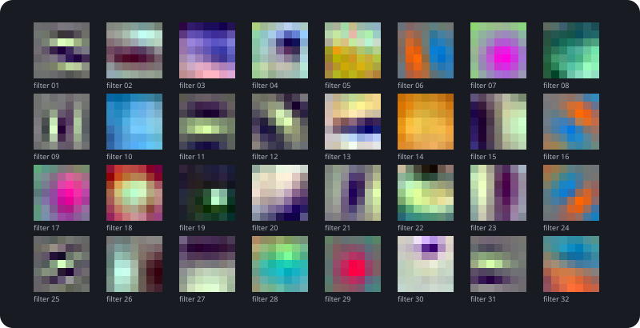
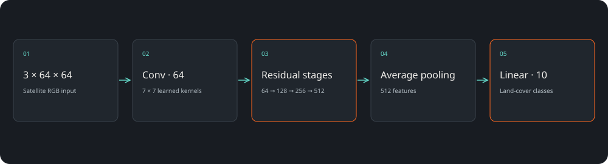
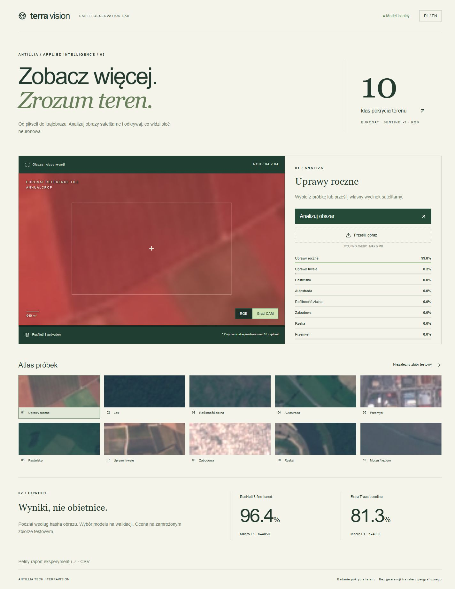

10 klas terenu
Uprawy, lasy, zabudowa, woda i pozostałe klasy EuroSAT.
Computer vision / CASE STUDY 03
Zbudowaliśmy aplikację, która rozpoznaje dziesięć klas pokrycia terenu na wycinkach zdjęć satelitarnych. Do wyniku dodaje rozkład klas i Grad-CAM, aby można było zajrzeć do zachowania sieci.
Accuracy · EuroSAT RGB
4050 obrazów testowych

SAVED ARTIFACTS / REPRODUCIBLE RESULTSDuże zbiory zdjęć wymagają powtarzalnej klasyfikacji. Ważny jest nie tylko wynik, ale też sposób jego porównania z prostszym modelem i możliwość obejrzenia błędów.
Uprawy, lasy, zabudowa, woda i pozostałe klasy EuroSAT.
Transfer learning z dostosowaną głowicą klasyfikacji.
Nakładka aktywacji ułatwia oglądanie reakcji sieci na konkretny wycinek.
4050 obrazów testowych
Accuracy (%) ↑
Ta ilustracja została wygenerowana z wag lub reprezentacji używanych w projekcie. Ułatwia rozmowę o architekturze, ale sama nie wyjaśnia każdej decyzji modelu.
React · FastAPI · PyTorch · torchvision · PillowWybór próbki „Uprawy roczne” → klasyfikacja wycinka, rozkład prawdopodobieństw i przełączana nakładka Grad-CAM. Można też przesłać własny plik JPG, PNG lub WEBP.

Wstępne porządkowanie zbiorów obrazów satelitarnych.
Punkt startowy do rozwiązania dopasowanego do regionu i źródła zdjęć.
Porównanie pomyłek między klasami i oglądanie obszarów aktywacji.
Test obejmuje 4050 obrazów EuroSAT. Rozdzieliliśmy identyczne hashe między zbiorami; nie potwierdziliśmy generalizacji na nowe regiony. Grad-CAM jest wizualizacją aktywacji, nie dowodem przyczynowym ani pomiarem geodezyjnym.
EuroSAT RGB · MIT ↗Projekt demonstracyjny zespołu Antillia. Scenariusze zastosowań opisują możliwości adaptacji; nie są deklaracją wdrożenia u klienta.
Pokaż nam problem. Dobierzemy zakres, dane i sposób sprawdzenia rozwiązania.
Omów swój projekt